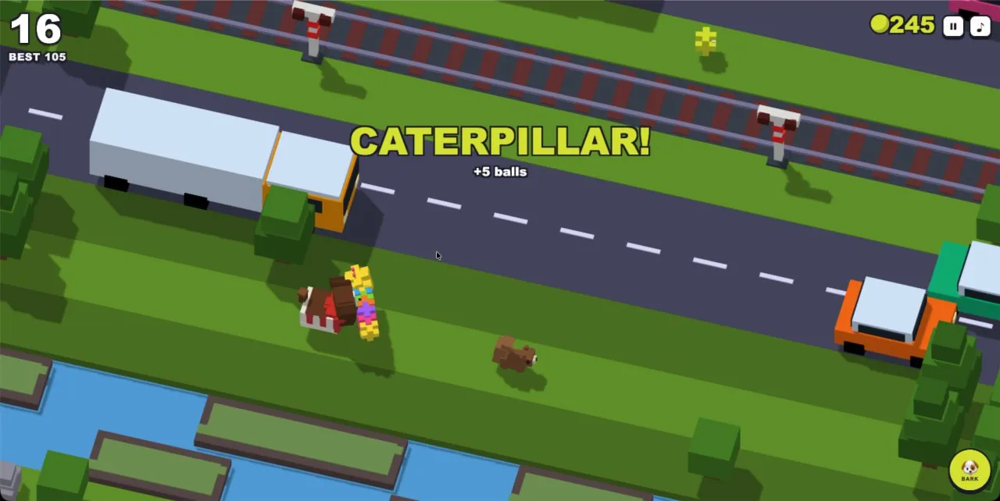
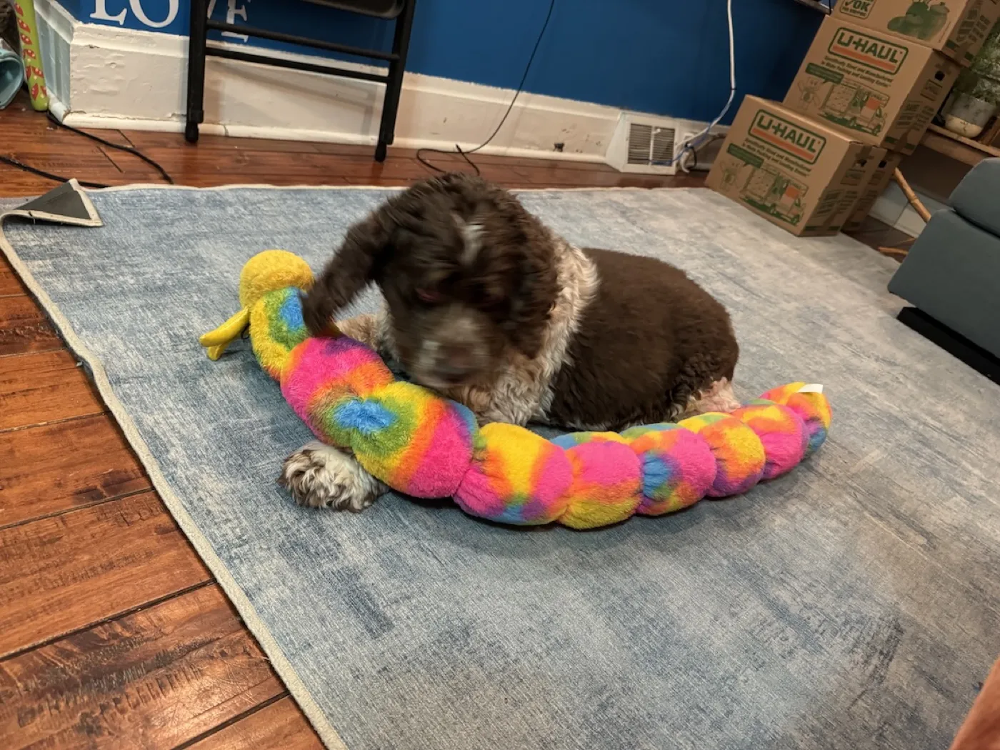
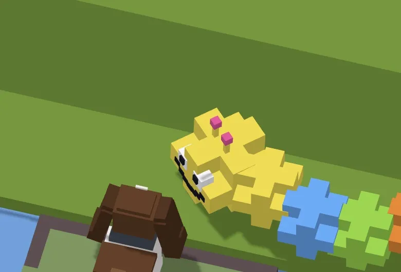
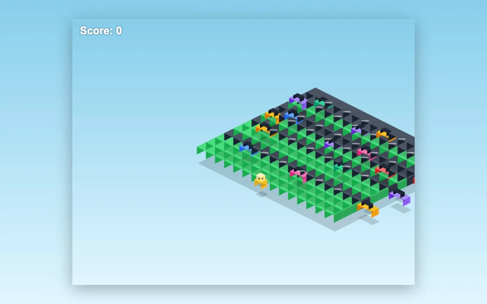
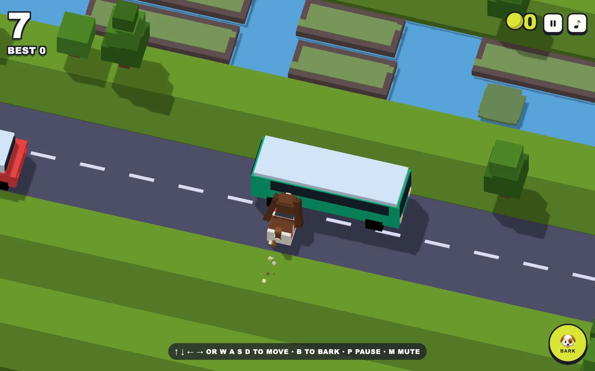

Browser game · September 2026
Charlie Road

Kiro, Claude Code, three.js
A browser version of Crossy Road starring Charlie, our nine-year-old cocker spaniel, in place of the chicken. It keeps what makes the original work: the voxel look, one hop per input, endless roads, rivers, and railways, and a camera that punishes dawdling. Then it adds what matters to Charlie: tennis balls instead of coins, a bark that stops traffic, squirrels to chase, his real outfits as unlocks, a giant caterpillar toy worth five balls, and a flying saucer piloted by a squirrel where the eagle used to be.
Play it Play the 30-minute class prototype Source, prompts, and build log on GitHub Gameplay video
What it is
Charlie Road is a browser version of Crossy Road with Charlie, our nine-year-old American cocker spaniel, in place of the chicken. You hop one tile per key press across endless roads, rivers and railways while the camera keeps scrolling forward. Charlie lives for tennis balls, so tennis balls replace the coins.

It keeps the bones of the original: the voxel look, one hop per input, and a camera that punishes dawdling. Then it adds what matters to him. He can bark to freeze the traffic in his row and the two ahead, with a cooldown. Squirrels run across the field to be chased. His real outfits (shades, a bandana, a bow tie, a sweater) unlock as he fetches balls. And if you stand still too long, a flying saucer piloted by a squirrel comes down and beams him up. That used to be an eagle. I asked for something cuter, because I did not love my dog being carried off by an eagle.
A tour
These are from the live game, played through its debug mode so I could pick the moment.


Charlie's favorite toy is a giant tie-dye caterpillar. I put a photo of it in the repo and asked for one to wander across the screen sometimes, worth a five-ball bonus, over-the-top happy, with a squeak like the real one. Catching it makes him spin and play with it for a moment before he drops it on the grass.




There is also a daily challenge that plays the same world for everyone that day, and a trading card of your run that you can save or share.
How I built it
It started as a 30-minute exercise in class. I used Kiro: it wrote a spec, built the game on autopilot, and then I spent the rest of the time asking for fixes. Five versions in half an hour, from colored rectangles on a canvas to a fake isometric board. My last prompt when the clock ran out was "it is still off center and the car pixels are covered up weirdly." That version is still playable.




At home I rebuilt it with Claude Code. Claude Opus 5 did the research, the plan and the spec, with orders not to build anything yet. I added photos of Charlie and changed the plan to star him. Then I asked for a complete spec, because I wanted to hand the build to Claude Code's `/goal` feature and let it run without me.
Two things in that spec mattered most.
- Measured numbers. The camera angle came from measuring the tilt of the lanes in real Crossy Road screenshots from the App Store. About 13 degrees solves to a 57° pitch and 15° yaw. The first block of the build was a hard gate: project a tile, measure it, and do not continue until it matches. It came back at 12.67°, exactly as predicted.
- A definition of done a machine could check. Every task ticked, all 24 acceptance criteria verified, the test suite passing, a 90-second play session with zero console errors and at least 50 fps, and everything pushed to a branch. The world generator also had fairness rules: never an uncrossable road, never an unreachable river. The tests check those over 50 seeds and 2,000 rows each.
The most useful rule was about verification. A browser tab in the background stops animating, and a screenshot of a frozen world looks exactly like a running one. So the first block built a debug harness that steps the game clock by hand and reads the game's state. Every time-based check had to be proven with numbers from the harness, never from a picture. The goal prompt said it plainly: do not "claim a criterion is verified when you only looked at a screenshot."
Then I switched to Claude Fable 5.1 and started the goal. It worked through the blocks unattended, committed after each one, and wrote every judgment call into `DECISIONS.md`. The first test run found a real bug in the world generator. Charlie's ears, built to spec, vanished into his head from a camera looking down from behind, so it splayed them out until he read as a cocker spaniel from above. I had planned four hours. It took about three.
After I played it, a second round of prompts added the bark, the saucer, the caterpillar, combos, the daily challenge and the trading card, in about 40 minutes. That round found its own problems: the squirrel was too fast to ever catch, the card photographed a drowned Charlie underground, and two of its own test harnesses gave wrong answers until it fixed them. Every prompt I typed, typos included, is in the repo's prompt log.
What's not done
Shake-to-bark and the phone layouts were tested with simulated events, not on a real phone, and performance on low-end phones is unmeasured. The tests cover the rules of the game, not the rendering or sound. Three suggested features were never built: a ghost replay of your best run, a quests board, and two players on one device.
Crossy Road is by Hipster Whale. This is a study replica built for my Coding with AI course, not affiliated with them. Play it, or read the source, prompts and build log.